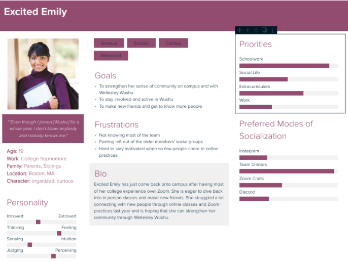

user analysis.
Part I: User Interviews
After identifying a user population (Wellesley Wushu team members), we created an interview protocol to learn more about their
experience with remote vs. in-person practices and the overall experience (best parts and challenges) of being in Wellesley Wushu.
These were the major takeaways from our interviewees:
Interviewee 1:
This interviewee has been in Wellesley Wushu since they first came to Wellesley and acknowledges
that Wushu is a core part of their identity and community at Wellesley when they said that
“all my friends, and my block, came from Wushu”. When COVID hit, the interviewee was
unable to stay motivated to keep attending practice despite their deep commitment to Wushu.
They mentioned that “it was really repetitive and I had nothing to do, so I took a nap. After a
while I didn’t want to go anymore.” The biggest contributor to this lack of motivation was the lack
of community that came from the loss of the in person practices and the absence of a goal or show
to practice for.
Interviewee 2:
This interviewee joined Wellesley Wushu one month before Wellesley
sent students home in March 2020. This interviewee found it very difficult
to continue to participate in Wushu remotely because practices were
repetitive and isolating, since “Kicks and stretching were all we did.
It got really boring and awkward.” They joined Wellesley Wushu for the community
but felt discouraged from connecting with people online, since she “already had
Zoom fatigue from classes.” This interviewee expressed excitement to be back
in person since “it was really hard to make friends over Zoom, but now that we’re
in person I’m getting to know the new members better.”
Interviewee 3:
This interviewee joined Wellesley Wushu remotely and is starting their second year in Wushu.
This interviewee attended remote practices diligently for a year. They felt that it was
difficult to learn over Zoom and practice was “a little sad, because some weeks it would
just be the president and I. So we would talk and do exercise videos” and mentioned that
practice got repetitive. The interviewee seemed excited for the chance to learn weapons with
other members, but trepidatious of socializing in person practices, since they felt awkward
because “even though [they] joined for a whole year, [they] don’t know anybody and nobody
knows [them].” The interviewee expressed that they felt more comfortable over Zoom since
“everyone stayed muted and did their own thing, so there wasn’t as much pressure to interact with people.”
Part II: Personas
With insights from real members of our user population we created two personas:


Part III: Task Analysis
Next, we synthesized our understanding of our problem domain through task analysis of three processes:
Hierarchical Task Plan (Task 1):
Plan 0: Do tasks 1 and 2 in that order
Plan 1: Do tasks 1.1, 1.2, 1.3, 1.4 in that order
Plan 2: Do tasks 2.1, 2.2, 2.3, 2.4 in that order (2.3 is optional). 2.4 can be repeated as many times as desired.

Hierarchical Task Plan (Task 2):
Plan 0: Do tasks 1, 2, 3 in any order (1 and 3 are optional)
Plan 1: Do tasks 1.1, 1.2 in that order
Plan 1.1: Do task 1.1.1 or 1.1.2
Plan 2: Do tasks 2.1, 2.2, 2.3, 2.4, 2.5 in that order. 2.5 can be repeated as many times as desired
Plan 3: Do tasks 3.1, 3.2, 3.3 in that order. 3.3 is optional and can be repeated as many times as desired

Hierarchical Task Plan (Task 3):
Plan 0: Do tasks 1 first, then 2 and 3 in any order (3 is optional
Plan 1: Do task 1.1 (optional)
Plan 2: Do tasks 2.1, 2.2, 2.3 in that order
Plan 3: Do tasks 3.1, 3.2 in that order. 3.2 is optional and can be repeated as many times as desired.